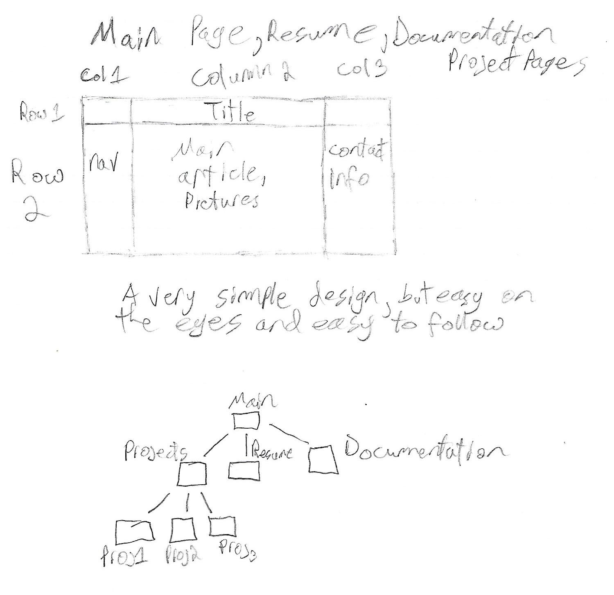

Documentation for this portfolio.
Creating this portfolio site was a fun task to undertake. The revision of this site was also great! I enjoyed learning how to work around some strange occurances with CSS grid and flexbox. The site pretty much followed the same design as the previous version, with some minor changes to color and alignment. The navigation button was shamelessly modeled after the one provided by W3Schools, a great place for HTML and CSS coding needs. Here's a link to the tutorial it was modeled after: Dropdown Tutorial. One particularly challenging aspect of designing this portfolio was alignment and color scheme. I spent multiple hours changing colors trying to decide if I wanted a darker shade of blue, or green, or silver, etc. The color scheme ended up being changed after I played around on Adobe's color wheel. Here's a link to their color wheel, which is super useful for creating color schemes! Adobe Color Wheel. Here's a sketch of my intended layout for the grid system of the site! 